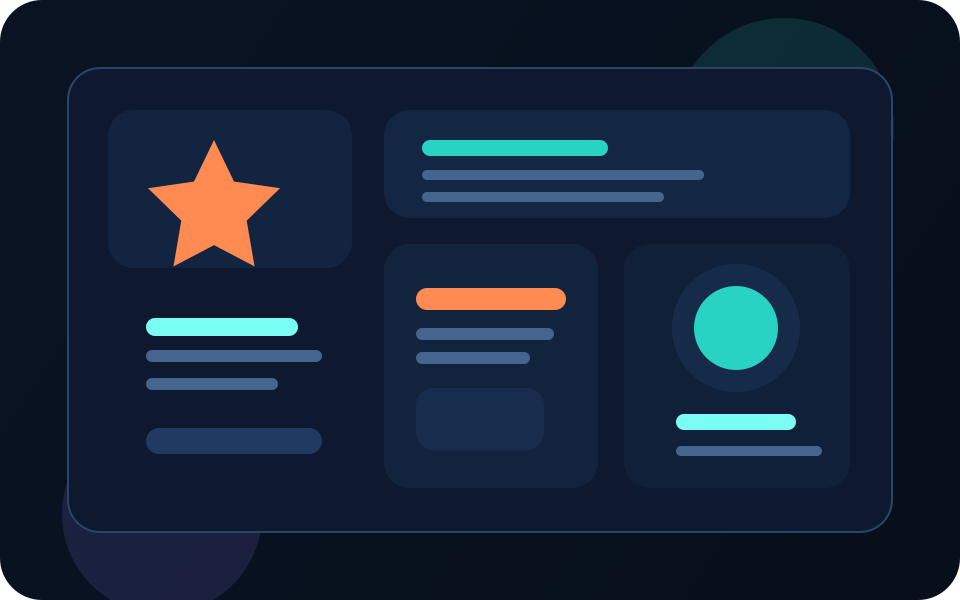
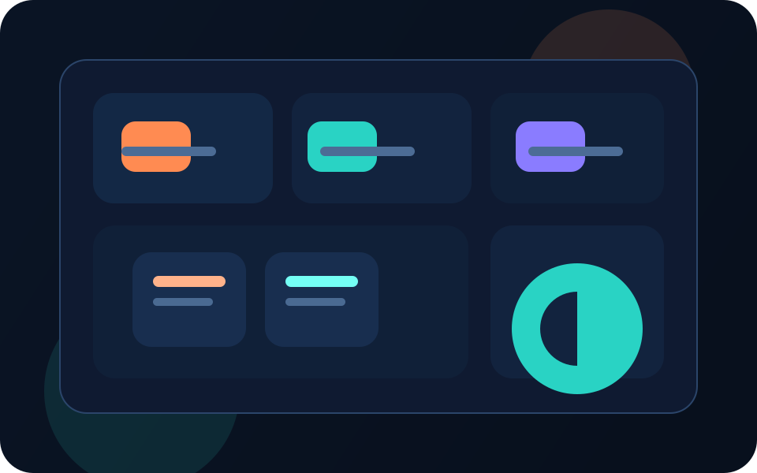
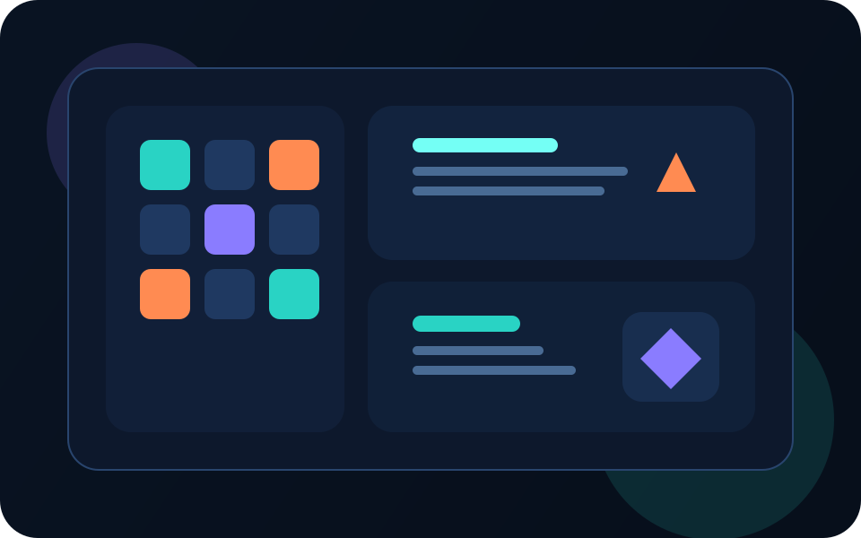

Entendo a necessidade
Transformo a ideia em uma estrutura clara antes de começar a construir.
Desenho a solução
Organizo visual, lógica e experiência para o projeto nascer mais sólido.
Entrego com identidade
Meu objetivo não é só funcionar, mas também passar mais confiança na apresentação.
Sobre mim
Desenvolvimento com base técnica, criatividade e vontade constante de evoluir.
Desenvolvedor em formação com foco na criação de sistemas funcionais e soluções reais. Possuo experiência prática com desenvolvimento web, lógica de programação, banco de dados e aplicações completas.
Busco constantemente evoluir tecnicamente, aplicando boas práticas, organização de código e pensamento estruturado para resolver problemas de forma eficiente.
Meu objetivo é atuar como desenvolvedor, contribuindo com projetos que gerem valor e impacto real.
Perfil em destaque
Autodidata
Organizado
Foco em resultado
Visão prática
Como posso ajudar
Áreas em que posso contribuir com projetos, páginas e sistemas.
Sites e páginas web
Criação de páginas em HTML, CSS e JavaScript com visual mais profissional, boa leitura e presença digital.
Sistemas e lógica
Construção de aplicações organizadas com regras de negócio, menus, estrutura modular e foco funcional.
Banco de dados
Modelagem, consultas SQL e organização de dados para dar base a sistemas mais consistentes.
Tecnologias e habilidades
Ferramentas que uso para construir experiências completas.
Back-end
- C#
- Python
Front-end
- HTML
- CSS
- JavaScript
Banco de dados
- SQL Server
- Consultas SQL
- Relacionamentos PK e FK
Ferramentas
- Visual Studio
- Git
- GitHub
POO
Estruturas de dados
Tratamento de exceções
Modelagem de banco
Lógica aplicada
Integração com APIs
Organização modular
Boas práticas
Projetos em destaque
Acompanhe alguns dos projetos publicados no meuGitHub.

App em TypeScript
LifeQuestApp
Aplicativo autoral com foco em gamificação da rotina, usando estrutura de app, assets e organização em TypeScript.
- Projeto publicado como repositório próprio no GitHub
- Estrutura com arquivos de app e assets organizados
- Mostra sua evolução em aplicações mais modernas

Banco de dados
SQL e modelagem
Modelagens basicas em SQL para aprender e desenvolver estruturas de dados, assim implementando nos projetos devidos.
- Exercícios de banco de dados do básico ao mais estruturado
- Uso de scripts `.sql` e organização por atividade
- Mostram base sólida em dados e relacionamentos
Front-end
HTML, CSS e JavaScript
Repositórios próprios para prática web com estruturas como `Bau`, `Coração`, `Emoji` e `Jogo teste`.
- Base prática separada por tecnologia
- Experimentos visuais e pequenos jogos
- Mostram evolução de interface e interação

Automação
Python e scripts práticos
Repositório com projetos em Python como `automacao_whatsapp` e `Squid Game`, unindo script, automação e experimentação.
- Envio automatizado com arquivo `enviar.py`
- Uso de planilha e automação prática
- Espaço para experiências criativas em Python
Experiência técnica
Capacidade prática para sair da ideia e chegar em uma aplicação funcional.
Desenvolvimento de sistemas
Criação de aplicações completas com estrutura, lógica de negócio, menus e organização modular.
Resolução de problemas
Análise de necessidades e implementação de soluções computacionais claras, úteis e evolutivas.
Integração e dados
Uso de banco de dados, consultas SQL e integração com APIs externas como mapas e localização.
Objetivo
Evoluir como desenvolvedor criando soluções que resolvam problemas de verdade.
Meu foco é participar da criação de sistemas e produtos digitais que unam tecnologia, organização, identidade visual e impacto real.
Desenvolvimento de software
Soluções para problemas reais
Projetos inovadores
Escalabilidade
Freelancer e oportunidades júnior